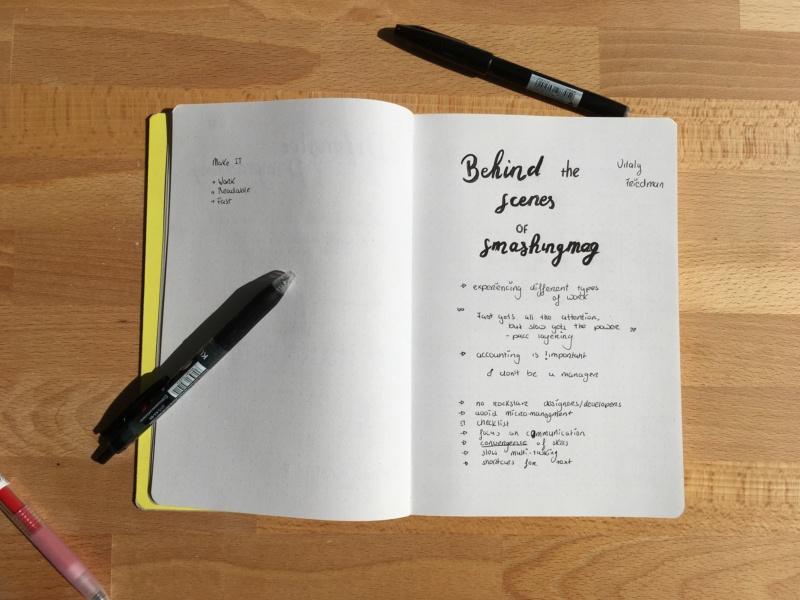

Vitaly Friedman, co-founder of SmashingMag
Bringing Personality Back To The Web
Everything looks == same
Vitaly talked about how everything on the web looked the same. Which if you look around for a bit, you’ll understand what he means. Given that almost everyone looks up to big companies and create similar design, because it works.
One of the examples he showed were cars with no rims shown. And lo and behold it looks almost identical.
The same goes for brand logos and navigations etc. To be honest I never realized this until Vitaly pointed it out, because I actually love flat design, minimalisme etc.
So this was definitely an eye opener, because lately I’ve been struggling with creating a portfolio which would be a representation of me. And when searching for inspiration I realized everything looked odly similar. After understanding the underlying problem, it will be easier to give my portfolio another go.

üí∞ Salary
Something that’s frowned up on is the topic salary. It’s something we don’t really touched up on, nor do we know anything about.
Vitaly briefly talked about what we could expect as a front-ender, designer and more, but most importantly he asked us to think about “how much do we need to be comfortable”. What he meant with comfortable is being able to pay for the basic stuff you need. For example your rent, food, hobbies etc.
This is something we as student don’t really think about. We are barely starting out and still have to find an internship, let alone think or know how much we need to be comfortable.
After this he talked about ownership when working in a big company. When working in a small company you usually get to work on a project from beginning to the end. Which mean you basically work on the whole application and not just a small feature, which may not even make it to the final cut.
This will probably something I’ll definitly keep in mind, when either searching for a job or even an internship!
These were sketchnotes I made from the lecture.
Conclusion
There is only one thing I can say other than, can’t believe it’s already over, had so much fun listening to his stories!